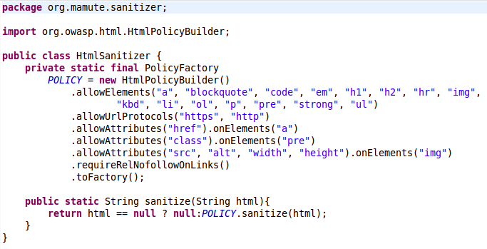
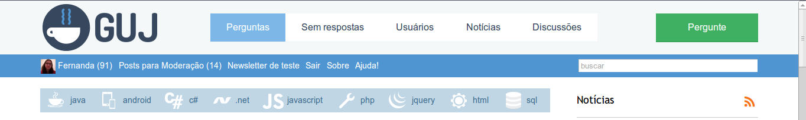
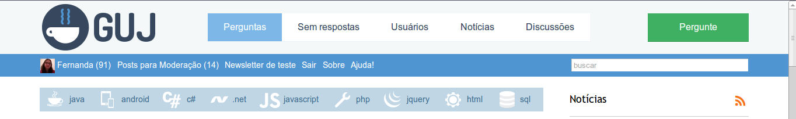
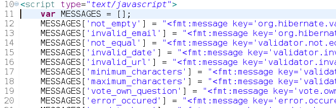
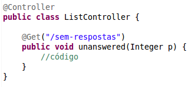

Estudo de Caso:
GUJ e Mamute
Fernanda Bernardo e Chico Sokol

WARNING
Qualquer semelhança com o
STACKOVERFLOW
é mera coincidência!
GUJ Fórum
13 anos
Começar do zero ou usar Open Source?
GUJ
Perguntas e Respostas
Como se desfazer de um sistema antigo?
Migrar aos poucos
Dois sistemas rodando ao mesmo tempo
upstream gujforum {
server 127.0.0.1:8080;
}
upstream gujperguntas {
server 127.0.0.1:9090;
}
server {
listen 80;
server_name guj.com.br www.guj.com.br;
location ~ ^(/forums) {
proxy_pass http://gujforum;
}
location / {
proxy_pass http://gujperguntas/;
}
}
Deploy Fácil
Deploy Fácil
Automatizado
Deploy Fácil
Reversível
Deploy Fácil
Zero Downtime

Segurança
HTML Injection

OwaspJava
 https://www.owasp.org/index.php/OWASP_Java_HTML_Sanitizer_ProjectLançamento
Lançamento
Sucesso na comunidade
Alternativas open source?
Dominar o mundo!

Mamute
Como saber se serviria para alguém?
Clientes Reais
Cobrança para partes customizáveis
CSS

CSS
JSP
 

JSP
JSP

JSP


Propriedades do Sistema

Propriedades do Sistema
Internacionalização
JSTL
fmt:message
Internacionalização de Javascript

Rotas
Customização das Rotas
https://github.com/caelum/vraptor-routes
routes.pt-BR.properties
Build
Mais fácil para o usuário
ConfiguraçãoMaven -> Bash -> Ant
Usuário FinalPacote pronto para colocar em produção
Update
O projeto tá pronto?
Não!
Documentação + Comunidade
Documentação + Comunidade
http://meta.mamute.org/Agora tá pronto!
Mas como faço tudo isso?
Como participar?
Fork us on GitHub
https://github.com/caelum/mamuteProcure pela tag oportunidade!